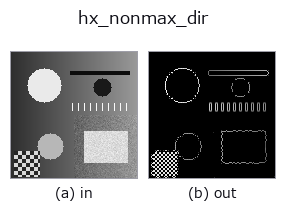

halcon_ext op• 데이터 종류: image → image
• 호출: fullseye.apply(img, "hx_nonmax_dir", a=0.5, b=0.5)(2-D 는 이미지 1 장 + 스칼라 노브 2 개 a,b∈[0,1] 모델)
• HALCON 대응: nonmax_suppression_dir(의미·매개변수는 HALCON 레퍼런스가 참고가 됩니다)

*그림은 128×128 합성 입력에서 실제로 실행한 출력. 왼쪽이 입력, 오른쪽이 출력. 점군은 위에서 본 산점도(밝기 = z), 1-D 열은 꺾은선, 볼륨은 z 방향 최대값 투영, 동영상은 가운데 프레임, 복소 영상은 진폭이며, 그림이 되지 않는 반환값은 값 자체를 표시한다.*
노브 a 를 훑기(0.1 / 0.5 / 0.9, 다른 노브는 기본값):
▸ hx_nonmax_dir: knob a sweep (docs site)
*노브 b 는 출력을 바꾸지 않는다(실측: 0.1 / 0.5 / 0.9에서 동일).*
다른 영상에서도(합성 장면 / 사진 / 동전. 윗줄이 입력, 아랫줄이 그 출력. 노브는 기본값):
▸ hx_nonmax_dir: other inputs (docs site)
*4열은 컬러 (H,W,3) 입력. 이 op는 채널을 넘나들지 않고 컬러를 다룰 수 있다(색 채널을 세 번째 공간축으로 컨볼루션하지 않음).*
기울기 방향을 따른 비최대 억제(Canny 의 NMS 단계). 에지를 1 화소로 세선화합니다.
> 아래 상세 설명은 원문입니다 —— 요약과 제목은 번역되어 있습니다.
Sobel で `gx(列方向)・gy(行方向)を取り、振幅 hypot(gx, gy) と方向 arctan2(gy, gx) mod 180°` を
求める。方向を 45° 刻みの 4 区分に量子化し、各画素をその区分に対応する 2 つの隣接画素と比べて
`mag >= 両隣 の画素だけ残す(それ以外は 0)。残った振幅を min-max で [0,1] に正規化し、a*0.3` 未満を 0 に落とす。
• `a → 弱エッジのしきい値 a*0.3`(正規化後の値に対して。a=0 でしきい値なし)。
• `b` は未使用。
注意点:
• 隣接比較は `np.roll` なので画像端では反対側の画素と比較される(端 1 画素は信用しない)。
• 比較が `>=` のため、同じ振幅が並ぶ理想的なステップエッジは 2 画素幅で残る(1 画素にはならない)。
• 現状の実装では 45° と 135° の区分で比較する隣接画素の対が入れ替わっており、斜めのエッジは勾配方向でなく
エッジに沿った方向で比較される。そのため水平・垂直エッジは細線化されるが、斜めエッジはほとんど細線化されない
(ぼかした対角ステップエッジで 1400 画素前後がそのまま残る実測)。斜めエッジの細線化が要る場合は `canny` や
`skeleton` を検討する。
`sobel_amp のような振幅画像ではなく元の gray 画像を渡す(内部で微分する)。後段は hx_close_edges` /
`hx_detect_edge_segments / threshold`。
• gallery2d_halcon_ext 패밀리 가이드
• 샘플 데이터 카탈로그(DL URL / 라이선스) —— 2-D 는 skimage.data(BSD/public)+ 합성, 3-D 는 실데이터 소스(Stanford/PDS 등)의 DL URL.
• 연산자의 내력·참고문헌 —— 이 연산자 족의 바탕이 된 연구/기법의 출처.
• 알고리즘의 정전(저자·연도)과 용도는 위의 패밀리 사용 가이드에 적혀 있습니다.
아래 프로그램은 실제로 실행됨을 확인했습니다(그림과 같은 입력). Studio 도움말에서는 이 블록이 버튼이 되어 즉시 불러와 실행할 수 있습니다.
hx_nonmax_dir 0.50 0.50
▸ Load this pipeline · Load & run
• gallery2d_halcon_ext — py -3.11 examples/gallery2d_halcon_ext.py
image 를 입력으로 받는 것)identity · gaussian · mean_box · bilateral · unsharp · median · min_filter · max_filter
halcon_ext)hx_gen_circle · hx_gen_ellipse · hx_gen_rectangle2 · hx_gen_checker_region · hx_gen_grid_region · hx_gabor · hx_fit_surface1 · hx_fit_surface2
*Provenance: ops.py — 2D 연산자 레지스트리. 이 op 노트는 tools/opdocs.py md 가 자동 생성합니다(직접 편집하지 마세요).*
© 2026 Kazufumi Furuse — Fullseye operator documentation. Licensed under Apache-2.0.
{kind=link}
{kind=link}